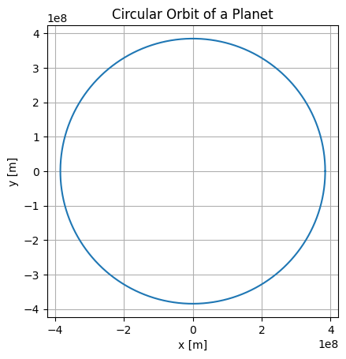

Orbital Period and Orbital Radius
1. Derivation of Kepler's Third Law
Kepler's Third Law of planetary motion states that the square of the orbital period (\(T\)) of a planet is proportional to the cube of the semi-major axis (\(r\)) of its orbit. For circular orbits, this relationship is expressed as:
To derive this relationship, let's start with Newton's Law of Universal Gravitation and the concept of centripetal force.
Newton's Law of Gravitation:
The gravitational force \(F\) between two bodies, such as a planet and the Sun, is given by:
Where: - \(G\) is the gravitational constant, - \(M\) is the mass of the Sun, - \(m\) is the mass of the planet, - \(r\) is the distance between the centers of the two bodies.
Centripetal Force:
For an object in circular motion, the centripetal force \(F_c\) required to keep the planet in orbit is:
Where: - \(v\) is the orbital speed of the planet.
Orbital Speed:
The orbital speed \(v\) can be related to the orbital period \(T\) (the time it takes for the planet to complete one orbit) by:
Substituting this expression for \(v\) into the centripetal force equation gives:
Simplifying this expression:
Equating the Forces:
Now, equate the gravitational force and the centripetal force:
Simplifying this equation:
Rearranging this equation gives the relationship between the orbital period and the orbital radius:
This shows that the square of the orbital period is proportional to the cube of the orbital radius, with the proportionality constant \(\frac{4\pi^2}{GM}\).
2. Implications for Astronomy
Kepler's Third Law is fundamental for understanding planetary motion and the behavior of celestial bodies. Here are some key implications:
Calculating Planetary Masses:
By measuring the orbital period \(T\) and the orbital radius \(r\) of a planet or satellite, we can calculate the mass \(M\) of the central body (e.g., the Sun, Earth, or another planet) using the formula:
This allows astronomers to estimate the masses of celestial bodies based on the orbital parameters of their satellites or planets.
Determining Orbital Distances:
Kepler's Third Law is used to determine the distance between two celestial bodies in orbit. By knowing the orbital period of a moon or satellite, we can compute the distance to the central body, helping us understand orbital mechanics in the Solar System.
Satellite Orbits:
For satellites orbiting Earth or other celestial bodies, Kepler’s law helps in predicting their motion and determining their orbital parameters, which is crucial for satellite communication, weather forecasting, and space exploration.
3. Real-World Examples
The Moon's Orbit Around Earth:
The Moon's orbital period is approximately 27.3 days, and its average orbital radius is about 384,400 km. By applying Kepler's Third Law, we can verify the relationship between the orbital period and radius for the Moon.
Planets in the Solar System:
Planets like Earth, Mars, and Jupiter follow Kepler’s Third Law. For example, Earth's orbital period is about 365.25 days, and its orbital radius is approximately 149.6 million km. Using Kepler’s Law, we can estimate the masses of the planets' stars (like the Sun) and predict the orbits of other objects like asteroids and comets.
4. Computational Model Implementation
To simulate circular orbits and verify Kepler's Third Law, you can use Python and numerical methods. Here’s an outline of how to approach the implementation:
Numerical Solution:
You can simulate the motion of a planet using Newton’s law of gravitation and solve for the orbital period using a numerical integration method like Euler’s method or the Runge-Kutta method.
Below is a Python code snippet that simulates circular orbits for a planet and calculates the orbital period based on Kepler’s Third Law.
import numpy as np
import matplotlib.pyplot as plt
# Constants
G = 6.67430e-11 # Gravitational constant in m^3/kg/s^2
M = 5.972e24 # Mass of Earth in kg
r = 3.844e8 # Distance from Earth to the Moon in meters
# Orbital period calculation using Kepler's Third Law
T = 2 * np.pi * np.sqrt(r**3 / (G * M)) # Orbital period in seconds
T_days = T / (60 * 60 * 24) # Convert period to days
print(f"The orbital period is approximately {T_days:.2f} days.")
# Simulating the motion of the planet in a circular orbit
theta = np.linspace(0, 2 * np.pi, 1000) # Angle array for one orbit
x = r * np.cos(theta) # x-coordinate
y = r * np.sin(theta) # y-coordinate
# Plotting the orbit
plt.plot(x, y)
plt.xlabel('x [m]')
plt.ylabel('y [m]')
plt.title('Circular Orbit of a Planet')
plt.gca().set_aspect('equal', adjustable='box')
plt.grid(True)
plt.show()

Visualization: Circular Orbits: The plot generated by the code will show the path of a planet in a circular orbit.
Orbital Period vs. Radius: You can also create plots showing the relationship between the orbital period and radius for various planets and satellites, verifying Kepler's Third Law.
- Discussion on Elliptical Orbits and Other Celestial Bodies While Kepler’s Third Law is most commonly applied to circular orbits, it is also valid for elliptical orbits.
Elliptical orbits are more complex, but they still obey Kepler’s Third Law. The law has applications beyond our Solar System, such as in the study of exoplanets orbiting distant stars. For objects with irregular orbits, such as comets, Kepler’s law can still be used to predict the orbital period and other parameters by analyzing their elliptical orbits.
- Deliverables For this task, you are expected to provide the following:
A Markdown document explaining the theoretical derivation of Kepler’s Third Law, its implications, and real-world applications.
A Python script or Jupyter notebook implementing the simulations of circular orbits and verifying Kepler’s Third Law.
Graphical representations of circular orbits and the relationship between orbital period and radius for different celestial bodies.
A discussion on the extension of Kepler’s Third Law to elliptical orbits and its application to other celestial bodies like exoplanets.